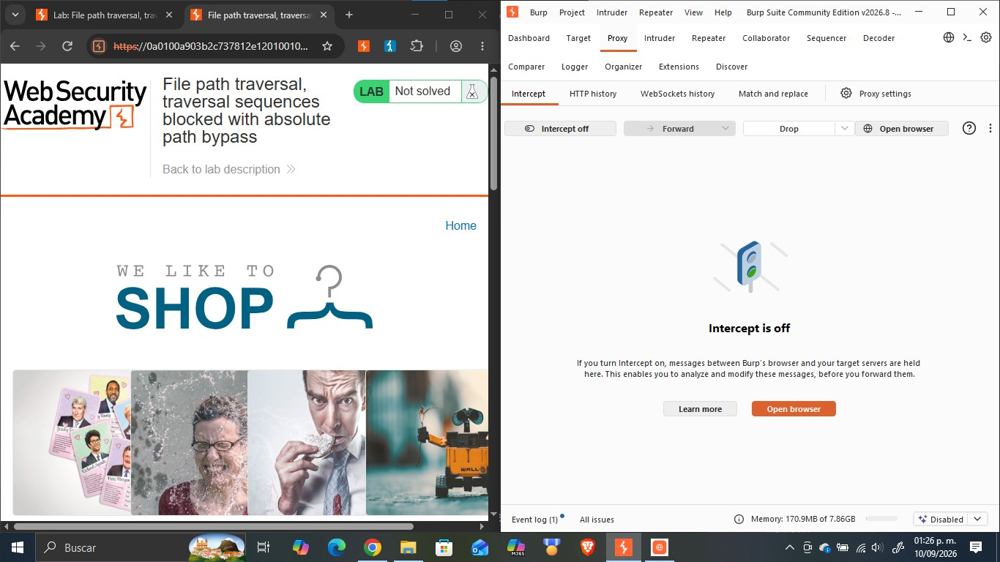
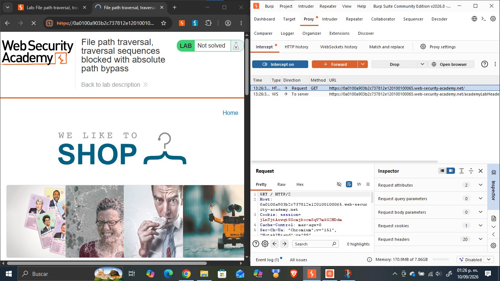
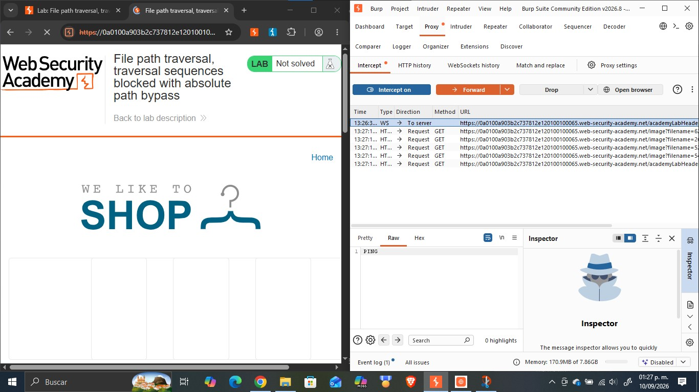
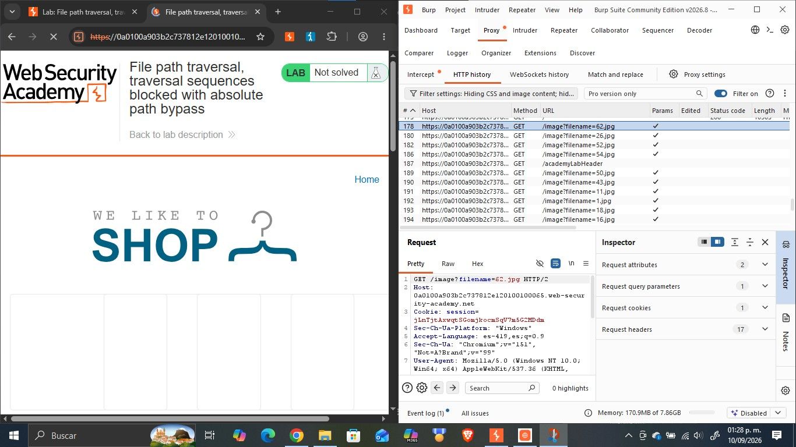
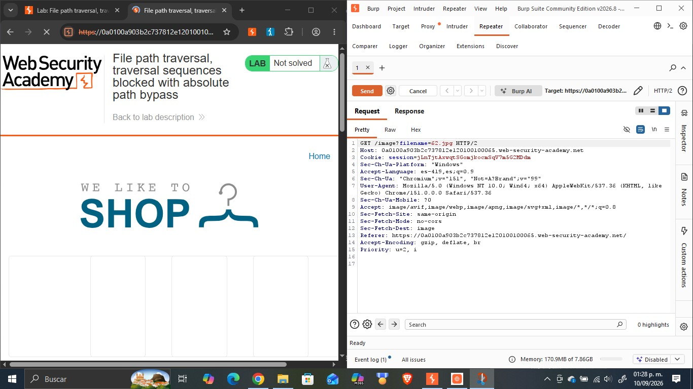
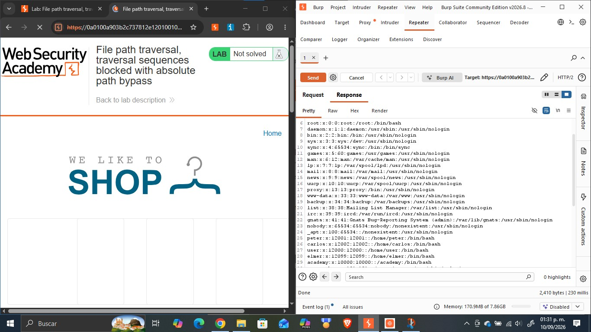
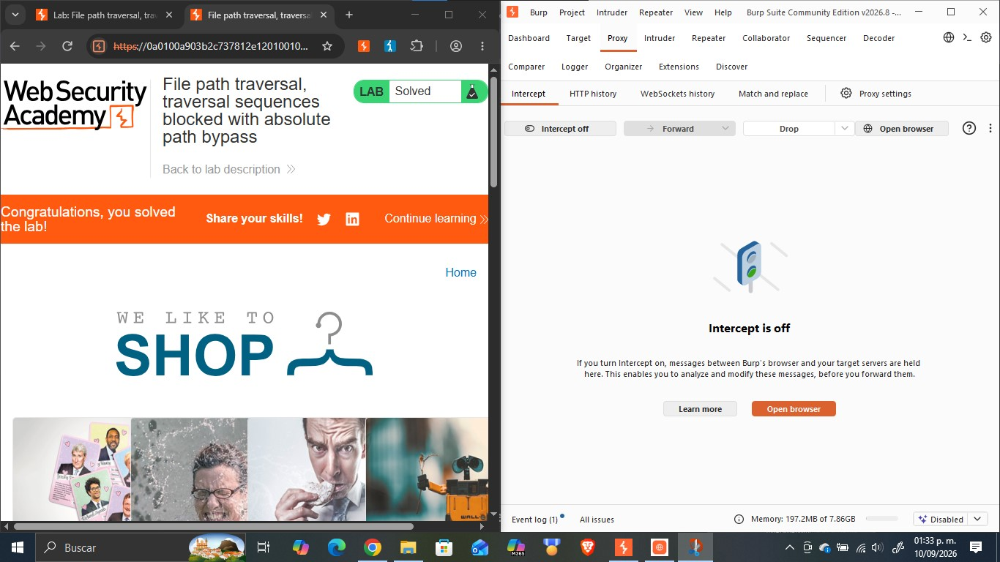

Objetivo
Este reporte documenta la resolución del laboratorio «File path traversal, traversal sequences blocked with absolute path bypass» de PortSwigger Web Security Academy, cuyo objetivo es explotar una vulnerabilidad de path traversal en la funcionalidad de visualización de imágenes de una tienda en línea, sorteando un filtro que bloquea las secuencias de traversal («../»), con el fin de acceder a archivos del sistema operativo del servidor que no deberían ser accesibles públicamente. La actividad forma parte del portafolio de evidencias «Road to Hall of Fame» de la asignatura CNO IV Seguridad Informática y profundiza en los obstáculos comunes que las aplicaciones interponen frente a esta vulnerabilidad categoría A01:2021 Broken Access Control del OWASP Top 10 así como en las técnicas para evadirlos usando Burp Suite.
Desarrollo
Esta sección documenta el laboratorio realizado en la práctica: su ficha técnica, la fundamentación de la vulnerabilidad explotada, el procedimiento seguido paso a paso con la evidencia fotográfica integrada en cada paso, el análisis del payload utilizado y las medidas de mitigación recomendadas.
| Nombre del Laboratorio | Nivel | Tipo de Explotación | Objetivo del laboratorio |
|---|---|---|---|
| File path traversal, traversal sequences blocked with absolute path bypass | Practitioner | Path Traversal / Directory Traversal bypass de un filtro de secuencias de traversal mediante el uso de una ruta absoluta en el parámetro filename | Explotar la vulnerabilidad de path traversal presente en la funcionalidad de visualización de imágenes de producto, evadiendo el filtro de secuencias «../», para recuperar el contenido del archivo /etc/passwd del servidor. |
Explicación técnica de la vulnerabilidad
Este laboratorio presenta una variante del path traversal simple en la que la aplicación sí implementa una defensa: antes de utilizar el parámetro filename, el servidor elimina o bloquea las secuencias de traversal «../» que el cliente intente incluir. Sin embargo, esta defensa es incompleta, ya que el servidor sigue tratando el valor resultante como una ruta relativa a un directorio de trabajo por defecto (por ejemplo, /var/www/images/), sin verificar si dicho valor es, en realidad, una ruta absoluta. En los sistemas de archivos Unix/Linux, cuando se le indica al sistema que resuelva una ruta que comienza con «/» (ruta absoluta), esta se interpreta desde la raíz del sistema de archivos, ignorando por completo cualquier directorio base al que el desarrollador pretendía «concatenarla». En consecuencia, un atacante puede omitir por completo las secuencias «../» que sí son filtradas y enviar directamente la ruta absoluta del archivo que desea leer (por ejemplo, /etc/passwd), logrando el mismo resultado que en el laboratorio de path traversal simple, pero evadiendo el control implementado. Esta vulnerabilidad ilustra un obstáculo común en la explotación de path traversal: la validación de entradas que bloquea un patrón específico (las secuencias de traversal) sin contemplar rutas alternativas de ataque (rutas absolutas), y corresponde igualmente a la categoría A01:2021 – Broken Access Control del OWASP Top 10.
Procedimiento paso a paso
Paso 1. Se abrió el laboratorio «File path traversal, traversal sequences blocked with absolute path bypass» en el navegador integrado de Burp Suite, con Intercept desactivado, verificando el estado inicial «Not solved» de la tienda en línea «We Like To Shop».

Paso 2. Se activó la opción «Intercept on» en la pestaña Proxy de Burp Suite y se recargó la página principal, capturando la primera petición GET / enviada por el navegador hacia el servidor.

Paso 3. Al reenviar (Forward) las peticiones interceptadas, se observó en el historial HTTP que el navegador solicitaba múltiples recursos a través del endpoint /image, cada uno con un parámetro filename distinto, correspondientes a las imágenes de los productos de la tienda.

Paso 4. Se seleccionó la petición GET /image?filename=62.jpg en el historial HTTP y se examinaron sus cabeceras completas para confirmar la estructura exacta de la petición, incluyendo la cookie de sesión y el método utilizado.

Paso 5. La petición se envió a la pestaña Repeater de Burp Suite (Send to Repeater) para poder modificarla y reenviarla de forma controlada las veces que fuera necesario.

Paso 6. En Repeater se sustituyó el valor del parámetro filename por la ruta absoluta /etc/passwd (sin secuencias «../»), aprovechando que la aplicación únicamente filtra las secuencias de traversal pero no valida si la ruta resultante es una ruta absoluta.
Paso 7. Se envió la petición modificada mediante el botón Send y se analizó la respuesta del servidor, confirmando el código de estado 200 OK y verificando que el cuerpo de la respuesta contenía el listado completo de usuarios del sistema, lo que evidenció la lectura exitosa del archivo /etc/passwd.

Paso 8. Se regresó al navegador y se recargó la página del laboratorio, confirmando que el banner superior mostraba el mensaje «Congratulations, ¡you solved the lab!» y que el estado del laboratorio había cambiado de «Not solved» a «Solved».

Explicación del payload
El payload utilizado fue /etc/passwd, enviado directamente como valor del parámetro filename en la petición GET /image?filename=/etc/passwd. A diferencia del laboratorio de path traversal simple, aquí no se emplean secuencias «../», ya que el servidor las detecta y las bloquea antes de construir la ruta final. Sin embargo, el filtro del servidor solo actúa sobre esas secuencias relativas: no verifica si el valor recibido es, en sí mismo, una ruta absoluta. Al recibir /etc/passwd, el servidor lo concatena (o intenta concatenarlo) a su directorio base de imágenes, pero el sistema de archivos subyacente interpreta cualquier ruta que comience con «/» como absoluta, es decir, referida directamente a la raíz del sistema de archivos, sin importar el directorio base al que se pretendía anexarla. En la práctica, esto significa que la ruta resultante equivale a leer directamente /etc/passwd desde la raíz del sistema, exactamente el archivo que almacena las cuentas de usuario del sistema operativo. El payload es efectivo porque explota la diferencia entre «sanear un patrón de caracteres» (las secuencias de traversal) y «validar la forma completa de la ruta resultante»: el servidor hace lo primero, pero no lo segundo.
Mitigación recomendada
Para prevenir y corregir esta vulnerabilidad se recomienda:
- Rechazar explícitamente cualquier valor de filename que sea una ruta absoluta (que comience con «/» en sistemas Unix/Linux, o con una letra de unidad como «C:\\» en Windows), además de filtrar las secuencias «../».
- Emplear una lista blanca (allow-list) de nombres de archivo o un identificador indirecto (p. ej. un ID numérico mapeado internamente al archivo real) en lugar de aceptar el nombre de archivo directamente del cliente.
- Canonicalizar la ruta resultante (resolver «../», enlaces simbólicos y rutas absolutas) y verificar que continúe dentro del directorio base permitido antes de leer el archivo, en vez de validar únicamente patrones de caracteres prohibidos.
- Ejecutar el proceso del servidor de aplicaciones con el mínimo privilegio necesario, restringiendo los permisos de lectura únicamente a los directorios estrictamente requeridos.
- Utilizar mecanismos de aislamiento del sistema operativo o del contenedor (chroot, jails, contenedores) que limiten el acceso del proceso a un sistema de archivos restringido, de modo que incluso una ruta absoluta no pueda escapar del entorno aislado.
- Mantener actualizado el software del servidor y aplicar pruebas de seguridad (SAST/DAST) que incluyan casos de path traversal con rutas absolutas y otras variantes de bypass dentro del ciclo de desarrollo seguro.
Resultados
Se logró explotar exitosamente la vulnerabilidad de path traversal presente en el endpoint /image, evadiendo el filtro de secuencias «../» implementado por la aplicación. En un primer momento se identificó que el servidor bloquea las secuencias de traversal relativas; sin embargo, al sustituir el parámetro filename por la ruta absoluta /etc/passwd, se obtuvo una respuesta HTTP 200 OK cuyo cuerpo contenía el archivo /etc/passwd completo del servidor, evidenciando cuentas del sistema como root, daemon, bin, sys, www-data, peter, carlos, entre otras. Este hallazgo fue confirmado por el propio laboratorio de PortSwigger, que actualizó automáticamente el estado de «Not solved» a «Solved» al detectar la lectura del archivo objetivo. El resultado demuestra que una defensa parcial filtrar únicamente un patrón de caracteres conocido es insuficiente si no se complementa con una validación integral de la ruta resultante, dado que un atacante puede recurrir a rutas alternativas, como las rutas absolutas, para lograr el mismo impacto que en un path traversal sin ninguna protección.
Conclusión
Este laboratorio permitió comprender que las defensas contra path traversal basadas únicamente en el filtrado de patrones específicos, como las secuencias «../», resultan insuficientes si no se valida también la forma completa de la ruta resultante, incluyendo la posibilidad de que sea una ruta absoluta. Se reforzó el uso de Burp Suite en particular Proxy, HTTP history y Repeater para identificar el comportamiento del filtro del servidor y diseñar un payload alternativo capaz de evadirlo. Esta actividad complementa directamente los contenidos de la asignatura CNO IV Seguridad Informática al mostrar, de forma práctica, por qué las validaciones de seguridad deben construirse sobre listas blancas y canonicalización de rutas en lugar de listas negras de patrones prohibidos, un principio aplicable a múltiples categorías del OWASP Top 10 más allá de Broken Access Control. Como siguiente paso dentro del portafolio «Road to Hall of Fame», se continuará documentando variantes adicionales de esta vulnerabilidad (secuencias stripped no recursivamente, doble URL-decode, validación de inicio de ruta, entre otras).
Referencias bibliográficas
- PortSwigger. (s.f.). File path traversal, traversal sequences blocked with absolute path bypass. PortSwigger Web Security Academy. https://portswigger.net/web-security/file-path-traversal/lab-absolute-path-bypass
- PortSwigger. (s.f.). Path traversal. PortSwigger Web Security Academy. https://portswigger.net/web-security/file-path-traversal
- OWASP. (2021). A01:2021 – Broken Access Control. OWASP Top 10. https://owasp.org/Top10/A01_2021-Broken_Access_Control/
- PortSwigger. (s.f.). Burp Suite documentation. https://portswigger.net/burp/documentation